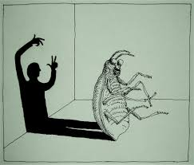

‘The Metamorphosis’ and ‘How Social Isolation Is Killing Us’
17 November 2022

Franz Kafka wrote such odd and affecting stories that he left behind his own adjective: Many use the word “Kafkaesque” to describe strange and nightmarish situations embedded in everyday life.
It’s easy to assume that these stories have nothing to do with the world we live in today. And yet, his themes and ideas are so prevalent that choosing a New York Times article to pair with his classic 1915 novella “The Metamorphosis” was hard — not for the lack of articles but for the challenge of narrowing it down to just one...
Read more about this
The Magic Mountain by Thomas Mann
11 November 2022

For The Magic Mountain is a work of sick-lit par excellence: a novel that convincingly portrays illness as a state of mind as well as of body (though Mann does not shy away from the more visceral aspects of the latter). This is a novel mystifyingly overlooked by Virginia Woolf in her 1926 essay On Being Ill, in which she bemoans literature's failure to make illness one of its "prime themes" alongside "love and battle and jealousy." Well, here illness is decidedly centre-stage, and the plot – what there is of it – almost incidental: Hans Castorp, a naive young engineer, travels to the International Sanatorium Berghof high up in the Swiss Alps to visit his ailing cousin, Joachim Ziemssen. What was intended as a stay of a few weeks stretches into months, and then years, as Hans himself is diagnosed tubercular and dutifully takes his place among the cast of coughing consumptives. There is a chilling ambiguity as to just how much of Hans's illness is genuine and how much the result of "going native". Indeed, Hans positively revels in his status as one of the "horizontal":
Hans Castorp stayed out on his balcony, looking down on the bewitched valley until late into the night… His splendid lounge chair with its three cushions and neck roll had been pulled up close to the wooden railing, topped along its full length by a little pillow of snow; on the white table at his side stood a lighted electric lamp, a pile of books, and a glass of creamy milk, the "evening milk" that was served to all the residents of the Berghof in their rooms each night and into which Hans Castorp would pour a shot of cognac to make it more palatable.
Read more about this
The Lockdown Lessons of “Crime and Punishment”
09 November 2022

What is this passage doing there, a few pages before the novel concludes? Recall what leads up to the dream. Raskolnikov, a twenty-three-year-old law-school dropout, tall, blond, and “remarkably good-looking,” lives in a “cupboard” in St. Petersburg and depends on handouts from his mother and sister. Looking for money, he plans and executes the murder of an old pawnbroker, a “useless, nasty, pernicious louse,” as he calls her; and then kills her half sister, who stumbles onto the murder scene. He makes off with the pawnbroker’s purse, but then, mysteriously, buries it in an empty courtyard.
Is it really money that he wants? His motives are less mercenary than, one might say, experimental. He has apparently been reading Hegel on “world-historical” figures. Great men like Napoleon, he believes, commit all sorts of crimes in their ascent to power; once they have attained eminence, they are hailed as benefactors to mankind, and no one holds them responsible for their early deeds. Could he be such a man?
Read more about this
|